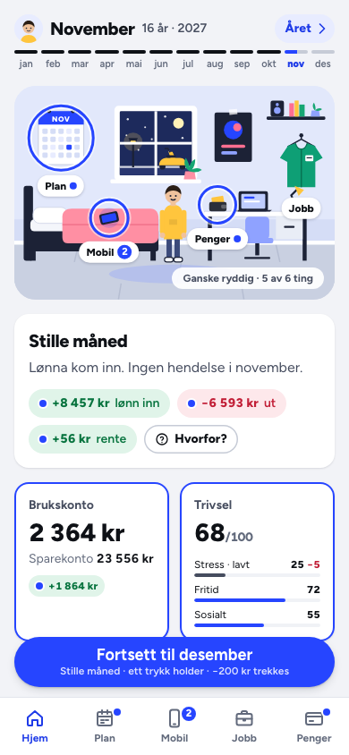
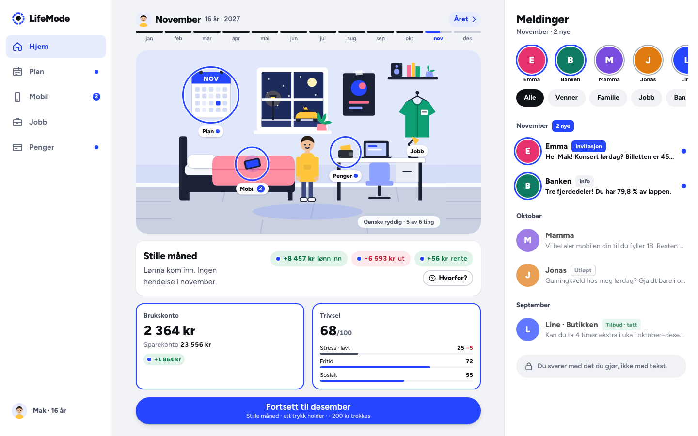
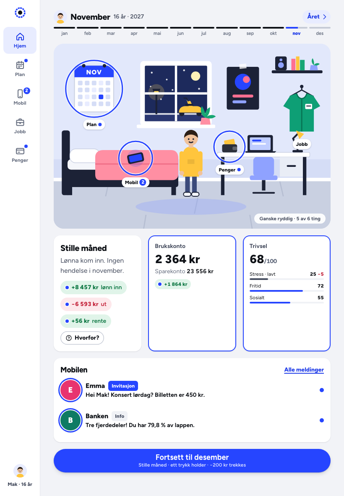
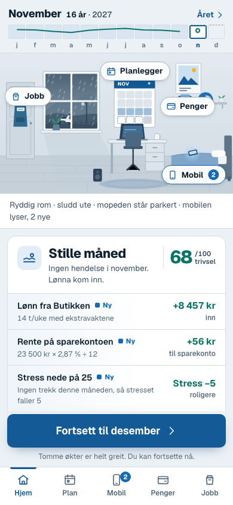
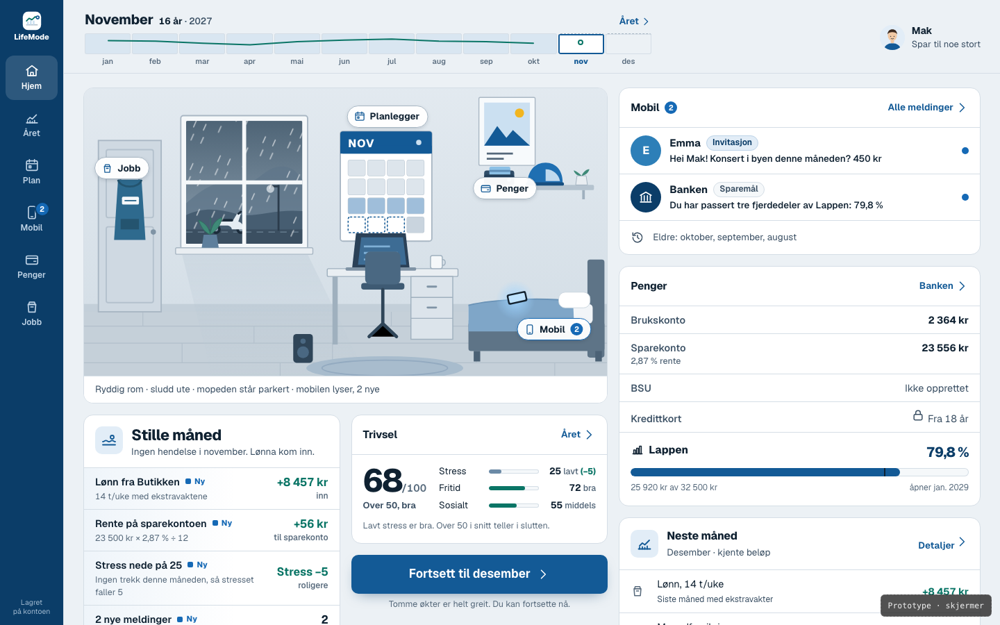
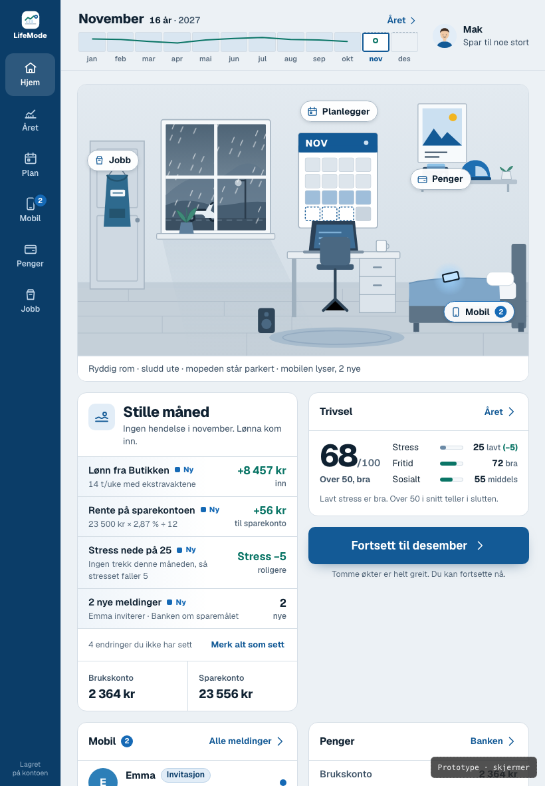
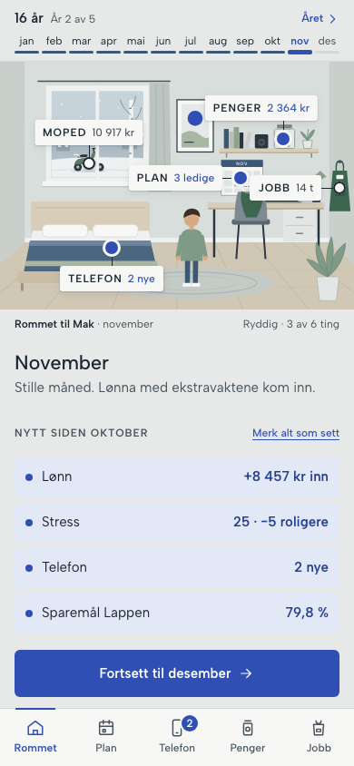
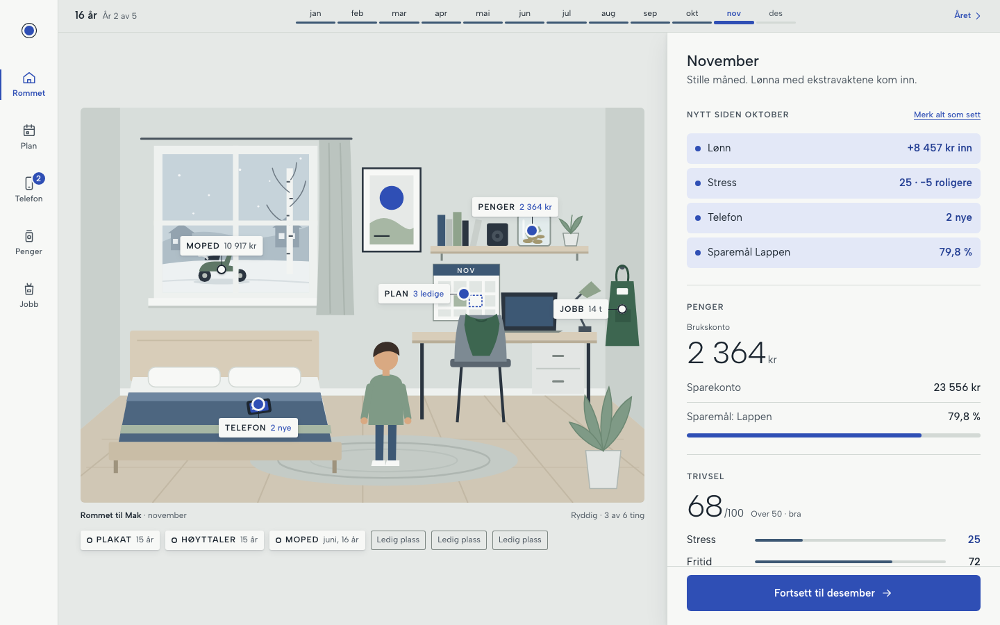
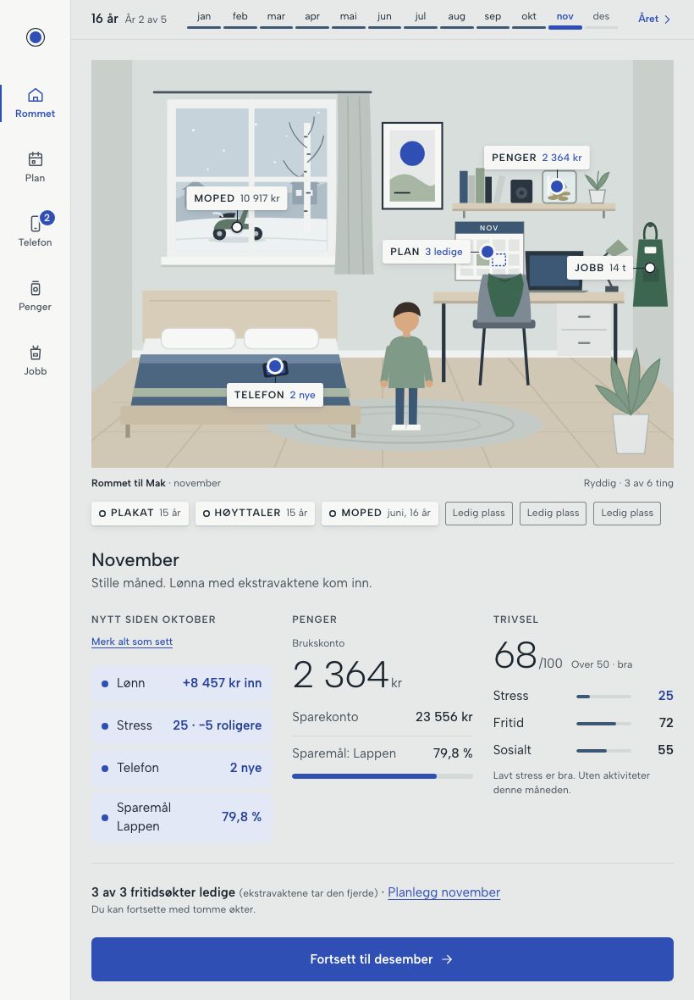

Alle fire bygger på Rommet (konsept 6): rommet ditt er hjem-skjermen, og tingene i rommet åpner telefonen, planen, pengene og jobben. Telefonen og banken er hentet fra Månedsfeed, tidslinjen viser månedene med navn og alderen din, og du har et kallenavn. Det som skiller dem, er det visuelle uttrykket, fra friskt til dempet.
Hvor de ligger på skalaen
Friskt · nærmest MånedsfeedDempet · nærmest Ly og Rommet
Ringer
Alt som er nytt i rommet ditt, får en ring.
Friskest

Mobil, 390 px

Desktop, 1440 px

Nettbrett, 820 px
Verden
Meldings-, story- og bankappene de åpner 50 ganger om dagen. Hvite flater, én koboltblå farge, Figtree og ekte mørk modus.
Signaturgrep
Story-ringer på tingene i rommet. Når noe er nytt (meldinger, saldo, en hendelse), får tingen en ring. Den blir grå når du har sett det. På desktop åpnes systemet i et panel til høyre, så du ser ringen forsvinne.
Risiko
Den mest kjente retningen. Rommet må bære spillfølelsen, ellers ligner det bare en app.
Polaroider og fotoautomatstriper på veggen. Kjølig grå bakgrunn, hvite fotorammer, én blitsgul farge og Archivo, med tusjskrift bare på bildetekster.
Signaturgrep
Tidslinjen er en fotostripe. Månedene som har vært, viser et lite bilde av hvordan rommet så ut da, og månedene som kommer, er blank film. «Fortsett» tar et blitsbilde. Ekkomerket er et lite oppslått bilde («Fra januar: pengegaven»).
Risiko
Foto-metaforen kan bli søt eller rotete på små skjermer. Stripa må holde seg lesbar på 320 px.
Livet ditt som et værvarsel: du ser hva som har skjedd, aldri hva som kommer.
Midt, mot dempet

Mobil, 390 px

Desktop, 1440 px

Nettbrett, 820 px
Verden
Værappen og meteogrammet alle i Norge sjekker. Kjølige fjord- og himmelblåfarger, skifer og hvitt, Geist med tabelltall.
Signaturgrep
Tidslinjen er en meteogramstripe. Månedene som har vært, har en tynn trivselslinje, og månedene som kommer, er tomme, fordi spillet aldri varsler hendelser. Vinduet i rommet følger årstiden. «Neste måned» i banken er et varsel over kjente regninger.
Risiko
Kan oppleves som en nytteapp mer enn et spill. Rommet, lyset fra årstiden og månedsåpningen må bære spillfølelsen.
Rommet ditt som en interiørkatalog. Hver ting har en lapp.
Mest dempet

Mobil, 390 px

Desktop, 1440 px

Nettbrett, 820 px
Verden
Nordiske interiørkataloger og bilder der du trykker på en ting for å se lappen. Tåke- og steingrått, mose, bjørk og blekkblått, én matt koboltfarge, og Albert Sans i bare fire størrelser.
Signaturgrep
Lapper på tingene i rommet, som i et interiørbilde der du kan trykke. En fylt prikk betyr nytt og blir stående til du har sett det. Nye ting, som mopeden utenfor vinduet, kommer inn i rommet med egen lapp.
Risiko
Dempet kan bli kjedelig for en 15-åring. Romillustrasjonen og øyeblikkene der noe endrer seg, må gi gleden.
12 skjermer i hver prototype: forside, opprett bruker med kallenavn, livsmål og avatar, rommet, året, månedsplan, hendelse, resultat med ekkomerke og «Hvorfor?», telefon, åpnet melding, penger og jobb. Knappen «Skjermer» hopper mellom dem.
Tidslinje uten «måned X av 60»: de 12 månedene med navn, alder og år. Trykk på den for å se året i detalj, med en aldersskinne fra 15 til 20 år og uten fremtidige hendelser.
Endringer blir markert til du har sett dem: etter «Fortsett» står nye tall og meldinger markert til du har åpnet dem.
Laget for desktop og nettbrett: flere paneler side om side, ikke en strukket mobilkolonne. Testet fra 320 til 1440 px uten sidelengs rulling.
Tall fra UJ-6 (november med ekstravakter, Emmas konsert, sparemålet Lappen på 79,8 %). Tall agentene har funnet på selv, står i hver retnings concept.md.
Må avklares
Kallenavn mot PRD-en: PRD-en tillater ingen fritekst utover e-postadressen (§4.2, NFR-3), og avataren har ikke navn (FR-10). Kallenavnet krever en PRD-endring før det bygges.
«Mangler … kr» skjer ikke med UJ-6-tallene: sparekontoen betaler resten (FR-45), så kortet som ikke har råd, er bare med for å vise tilstanden.
Alder: prototypene viser 16 år. I UJ-6 er spilleren 17, men timelønna er den samme.
«År 2 av 5» står i Blits og Stue. Det er ikke en månedsteller, men si fra om dere ikke vil ha det heller.
Fonter lastes fra Google Fonts i prototypene. I produksjon må de ligge på egen server (NFR-3).